Cloudflare Pages
Use it for static frontend files: HTML, CSS, JS, images, SEO pages, lesson pages, and tools that run in the browser.
This lesson turns our full setup conversation into a structured guide: Cloudflare registration, DNS migration from GoDaddy, Blogger-safe DNS records, Cloudflare Worker hosting, custom domain mapping, HTTPS, WSS, and final testing for server.learnwithchampak.live.
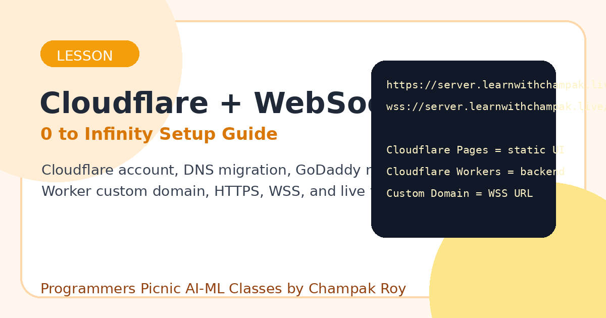
Cloudflare has two different hosting roles. Mixing them up creates confusion.
Use it for static frontend files: HTML, CSS, JS, images, SEO pages, lesson pages, and tools that run in the browser.
Use it for backend/serverless code: API endpoints, WebSocket handling, redirects, lightweight logic, and request processing.
Use this to make a Worker available at your own hostname, for example server.learnwithchampak.live.
Website URL: https://server.learnwithchampak.live/ WebSocket: wss://server.learnwithchampak.live/
Start by making a Cloudflare account and adding the main domain.
Connect a domain, not transfer and not buy.learnwithchampak.live, not server.learnwithchampak.live.learnwithchampak.live before it can create a Worker custom domain like server.learnwithchampak.live.DNS tells the internet where each domain or subdomain should go.
| Type | Name | Content | Proxy | Meaning |
|---|---|---|---|---|
| A | @ | 216.239.32.21 | DNS only | Google/Blogger root domain |
| A | @ | 216.239.34.21 | DNS only | Google/Blogger root domain |
| A | @ | 216.239.36.21 | DNS only | Google/Blogger root domain |
| A | @ | 216.239.38.21 | DNS only | Google/Blogger root domain |
| CNAME | www | ghs.google.com | DNS only | Blogger www mapping |
The imported DNS had an old server record:
A server 148.72.90.30
That record had to be removed because server.learnwithchampak.live must point to the Cloudflare Worker, not to the old IP.
The GoDaddy nameservers:
ns63.domaincontrol.com ns64.domaincontrol.com
were replaced with the Cloudflare nameservers:
daniella.ns.cloudflare.com venkat.ns.cloudflare.com
The Worker is the backend. It can accept a WebSocket upgrade request.
Workers & Pages.server.Edit code.export default {
async fetch(request) {
const upgradeHeader = request.headers.get("Upgrade");
if (upgradeHeader !== "websocket") {
return new Response("Use WebSocket: wss://", { status: 426 });
}
const pair = new WebSocketPair();
const client = pair[0];
const server = pair[1];
server.accept();
server.addEventListener("message", event => {
server.send("Echo from Cloudflare Worker: " + event.data);
});
return new Response(null, { status: 101, webSocket: client });
}
};After the main domain is active in Cloudflare, attach the subdomain to the Worker.
Workers & Pages.server.Settings.Domains & Routes.Add.Custom Domain.server.learnwithchampak.live.Before: https://server.champaksworld.workers.dev/ After: https://server.learnwithchampak.live/ wss://server.learnwithchampak.live/
HTTPS is for web pages. WSS is secure WebSocket. Both should work on the custom domain.
Always open the secure URL:
https://server.learnwithchampak.live/
If the browser shows Not secure, check whether you opened http:// instead of https://.
Use this inside JavaScript:
wss://server.learnwithchampak.live/
Do not use ws:// from an HTTPS page.
const ws = new WebSocket("wss://server.learnwithchampak.live/");
ws.onopen = () => {
console.log("Connected");
ws.send("Champak");
};
ws.onmessage = event => {
console.log("Received:", event.data);
};
ws.onerror = error => {
console.log("Error:", error);
};Connected Received: Echo from Cloudflare Worker: Champak
You also generated a homepage for server.learnwithchampak.live.
The static homepage can be served by a Worker response, by Cloudflare Pages, or by another static host. The backend WebSocket behavior comes from the Worker.
server.learnwithchampak.live/ → Worker handles requests → normal HTTPS request returns homepage HTML → WebSocket upgrade request becomes WSS backend
These screenshots document the real flow followed in this setup.
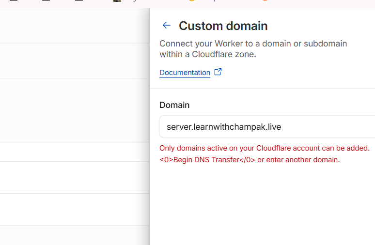
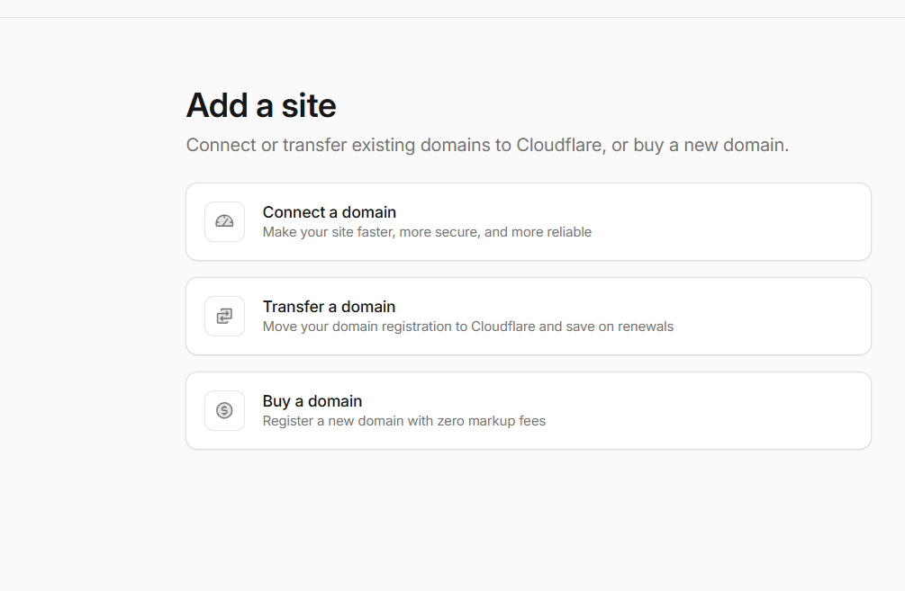
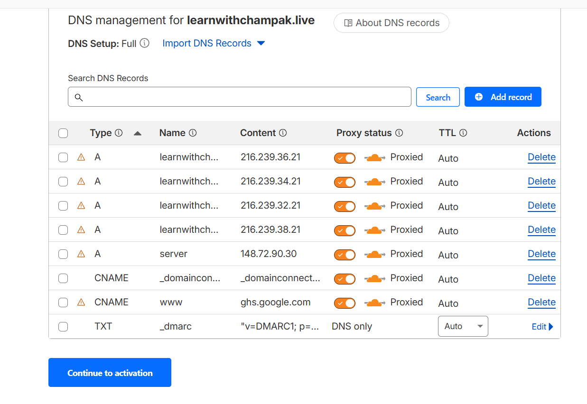
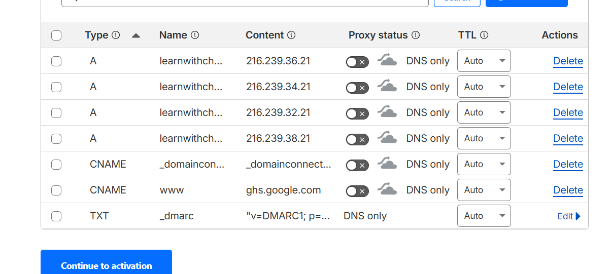
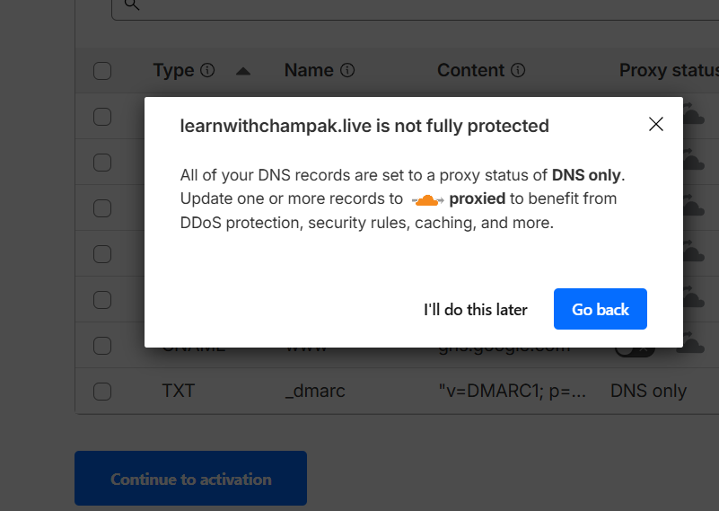
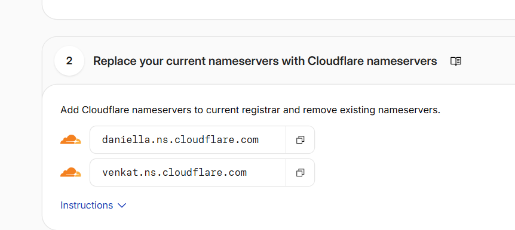
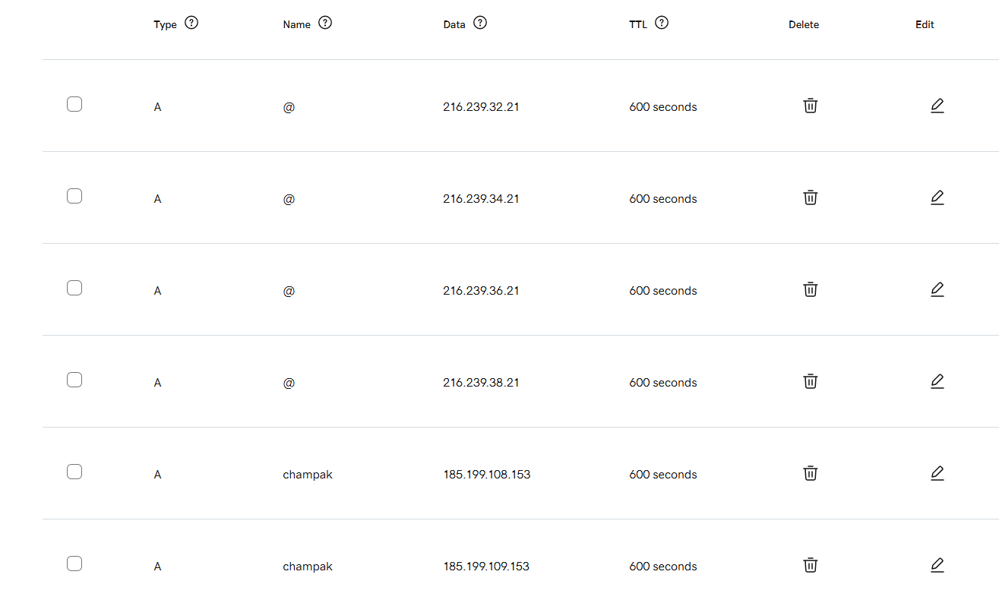
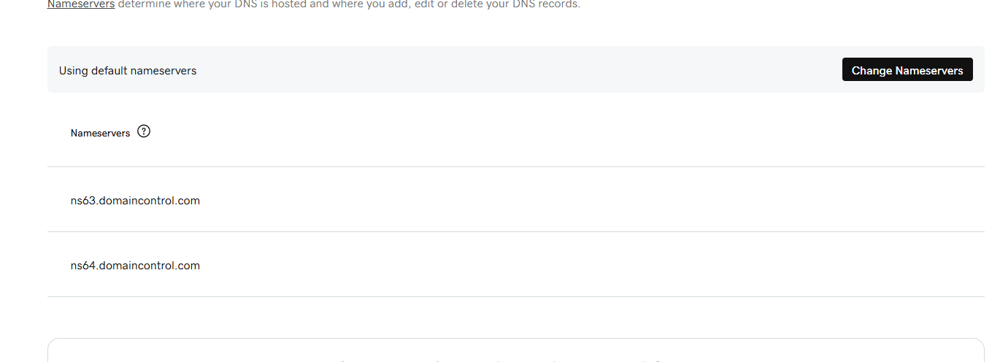
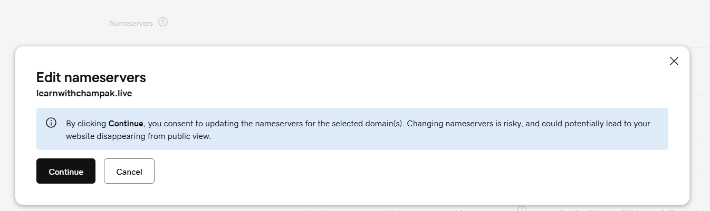
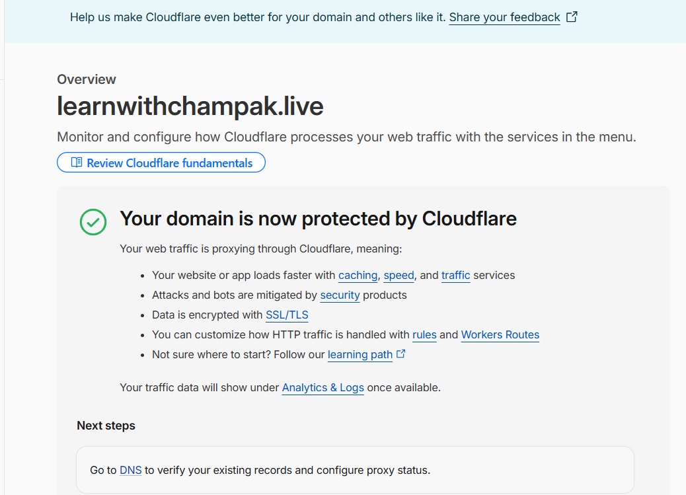
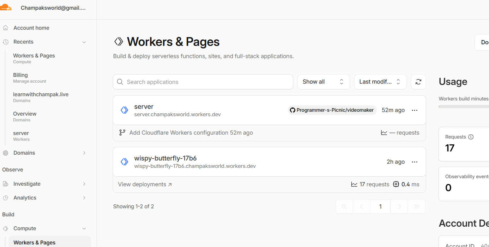
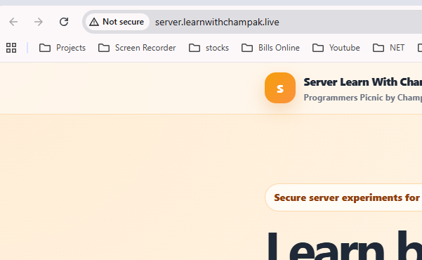
Common problems and direct fixes.
| Problem | Likely cause | Fix |
|---|---|---|
| Cloudflare says domain not active | Nameservers not changed yet or propagation not complete | Replace GoDaddy nameservers with Cloudflare nameservers and wait |
| server.learnwithchampak.live goes to old IP | Old A server record still exists | Delete old server A record and add Worker custom domain |
| Main Blogger site stops working | Google/Blogger DNS records missing | Keep four Google A records and www → ghs.google.com |
| Browser shows Not secure | Opened HTTP, certificate still pending, or SSL setting issue | Open HTTPS, wait, and check SSL/TLS mode |
| WebSocket fails | Using ws:// or wrong Worker URL | Use wss://server.learnwithchampak.live/ |
Use these for student practice or video narration.
No. Pages hosts static frontend files. Use Cloudflare Workers for the WebSocket backend.
wss://
No. Replace them with the two Cloudflare nameservers only.
Because server.learnwithchampak.live needed to route to the Cloudflare Worker, not to the old IP address.
https://server.learnwithchampak.live/ and wss://server.learnwithchampak.live/.